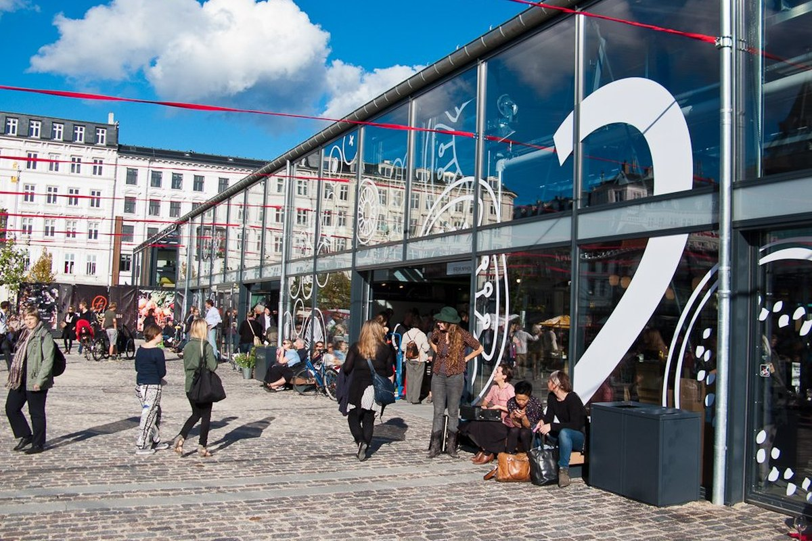

🇩🇰
Travel Companion Alpha
Koppenhága · Mai nap
↻
▱
🟢 Friss · demo
◎
◉
◎
📅 Mai nap
🧳 Utazások
🌍 My Travels
⚙ Beállítások

Következő: Torvehallerne
10:00 · 40–60 perc
0 / 6
Idővonal
Körülöttem
Guide
Mentettek